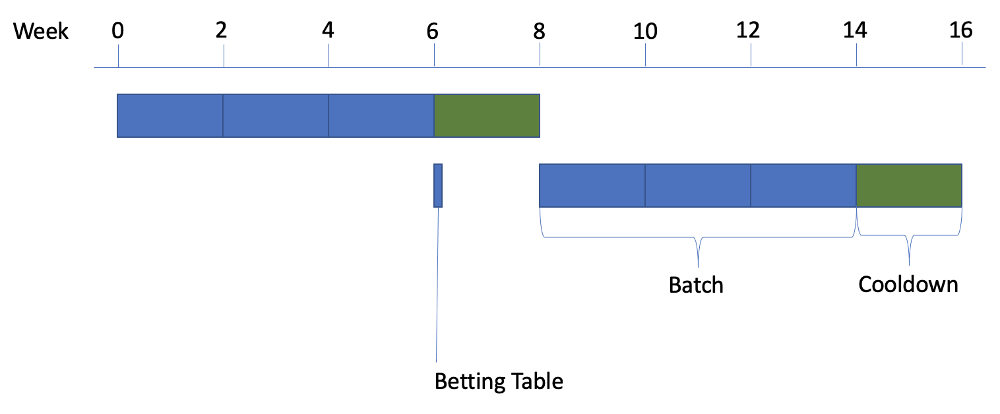
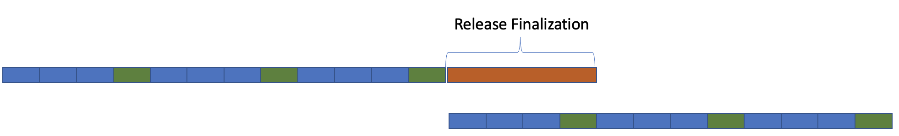
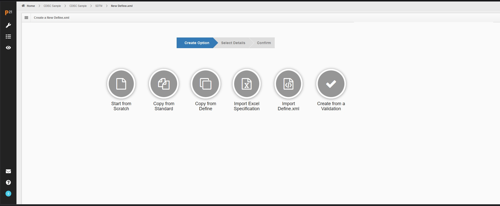
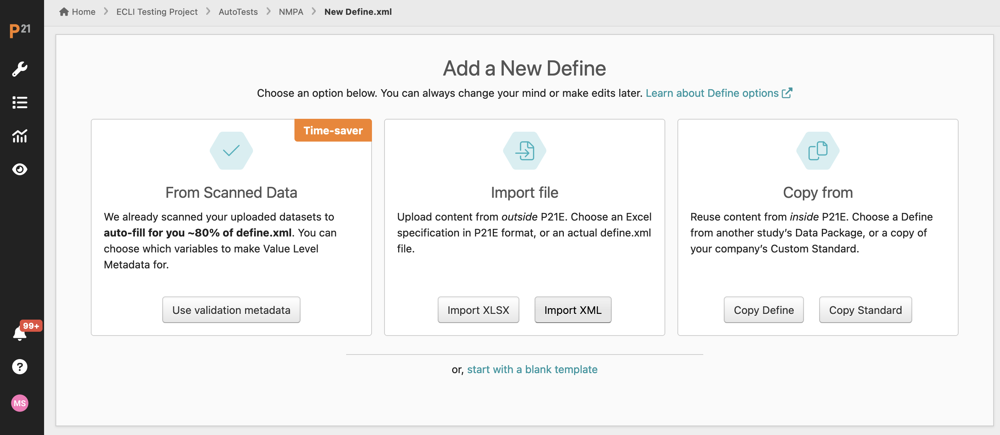
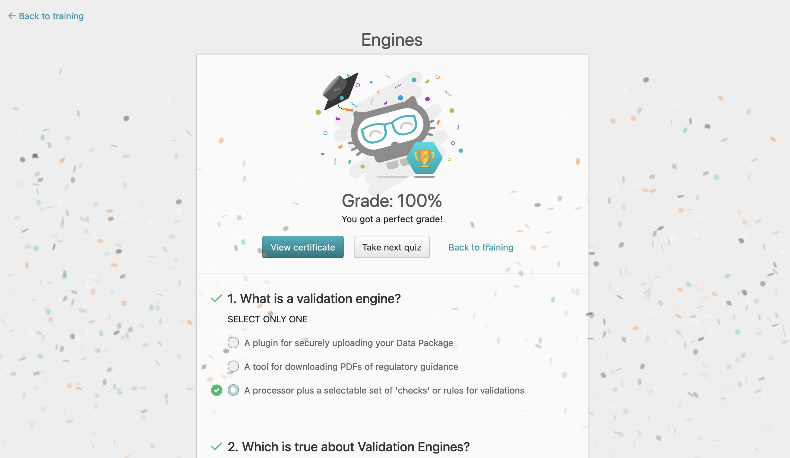
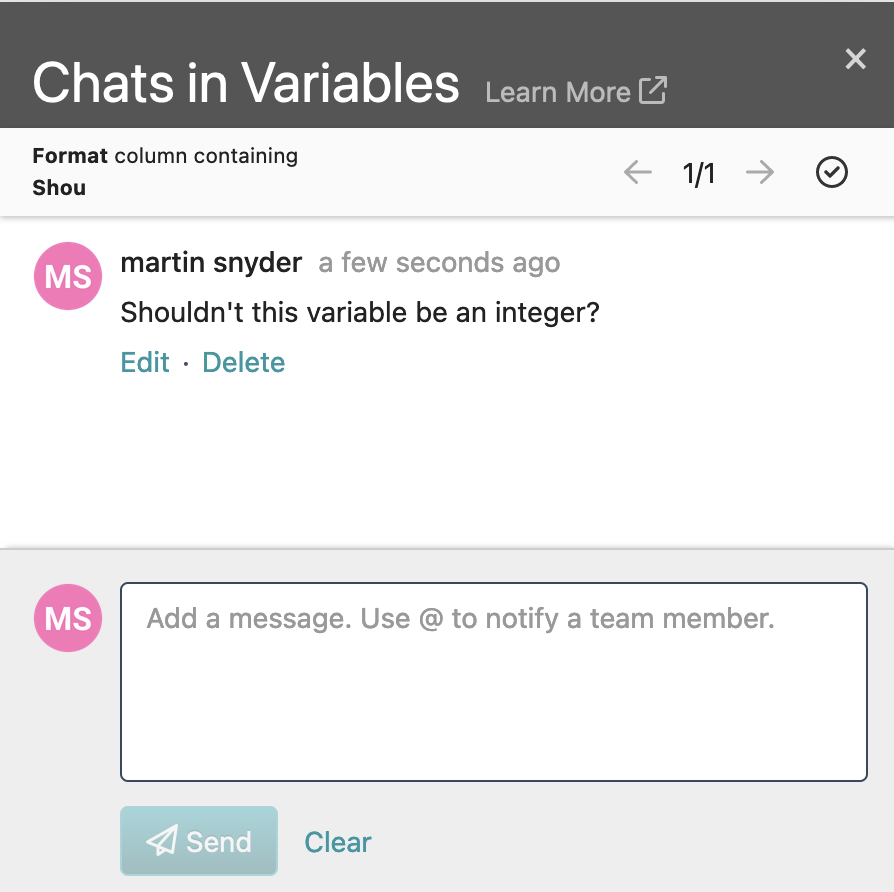

Part 1 - The Book

Part 2 - Off to a Great Start

Part 3 - Down to Business

Part 4 - No Leaders

Part 5 - Accountability

Epilog - Common Agile Failures
- Focus on 100% resource utilization
- Lack of ownership
- Ineffective or absent collaboration
- Us vs. them mentality, unidirectional relationships
Properties of Agile Teams
- Self-organizing
- Cross-functional
- Highly engaged
- Empowered
- Constantly collecting feedback
Priorities of Agile Teams
- Build the right thing
- Always maintain your release capability
Introducing Shape Up
Shape up is a macro-level agile methodology focused on the product / engineering collaboration

Pitch
A written proposal expressing a problem area, solution parameters, justification, and boundaries
NOTE: Anyone can write a pitch!

Appetite
Budget, in the sense of how much "product" is willing to spend on a specific pitch.
- Typically expressed as either a "Small Batch" of 2 weeks or a "Big Batch" of 6 weeks.
- Items that exceed their appetite are returned to the betting table for re-assessment.
Betting
Ritual where the product team discusses the available pitches and chooses which ones to invest in.
Negotiation
Discussion between product, engineering, design, and test, to determine a preferred implementation within the appetite.
Cycle
The execution phase of Shape Up. Divided into a planned, development phase (termed "Batch") and a unplanned phase (termed "Cooldown")
Certara Shape Up Implementation
Disclaimers
- No silver bullets - all changes require effort
- Process improvement won't address a people problem
- Certara delivers enterprise software products to a regulated market
- Your Mileage May Vary
Collaboration Model - Key Roles
- Product Analyst
- Product Designer
- Software Engineer
- Software Tester
Staffing Ratios
- 6:1 Engineer to product ratio
- 4:1 Engineer to test ratio
- 15:1 Engineer to design ratio
Cycle Timelines
- Betting meeting is held at start of cooldown
- When on schedule, 25% of total engineering time is unplanned
- Carry-over is deadly

Release Timelines
- We introduced "Release Finalization" to manage our infrequent release schedule
- Includes merge, refinement, and end-to-end testing

Betting Responsibilities - Product
- Present pitches the author is willing to fight for
- Balance intuition with data and research
- Focus on problem articulation
- Prepare for negotiation without negotiating
Betting Responsibilities - Engineering
- Understand all pitches and highlight risks and issues
- Clarify actual engineering capacity available
- Articulate and enforce constraints
- "Technical Initiatives" that cannot fit into cooldown activities are represented as pitches
Desired Betting Outcomes
- Available engineering capacity is consumed
- 50-75% of authored pitches are selected
- Authors whose pitches were not selected are angry
- Selected pitches reasonably reflect portfolio priorities
- Engineering organization is able to produce an execution plan
Execution Additions
- Similar efforts will be grouped together for better coordination
- "Second opinions" available during negotiation
- Scorecard completed at the end
Variable Application of Shape Up
| Phase |
Description |
| Beachhead |
1:1 collaboration between product and engineering |
| Investment |
Mostly big-batch items heavily researched |
| Refinement |
Mostly small-batch items with analytics support |
| Maintenance |
Unplanned collaboration |
Create New Specification (Before)

Create New Specification (After)

In Application Quizzes

Spec Chat

P21 Addons
- One betting table across portfolio
- Grouping of efforts during execution
- Beachhead efforts outside of Shape Up
- Curated list of technical initiatives
- Second opinions during negotiation
- Shape Up scorecard
- Release finalization
Lessons Learned
- Be strict about appetite, protect cooldown
- Reward those most effective in cooldown
- Collaborate during negotiation
- Encourage pitch authors
- Expect more from your team